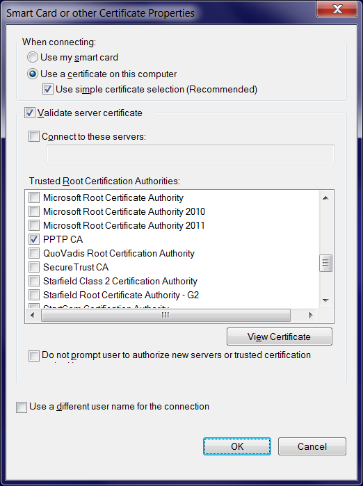

EAP-TLS patch for pppd
A warning on Windows Certificate Verification
When setting up a Windows PPTP Client you have a choice of
enabling of disabling the server certificate verification. If you disable server certificate verification,
then the Windows PPTP client will happily connect to almost any PPTP VPN server, without checking the
validity of the server-supplied certificate at all. Thus, in the following screen

enabling the option Validate server certificate is always a wise choice.
However, to make life worse, if you have tested your VPN connection profile without server certificate
validation, and then turn the option ON then
ALWAYS MAKE SURE TO REBOOT WINDOWS AFTER TURNING ON "VALIDATE SERVER CERTIFICATE"
If you do not reboot, then Windows will continue to connect to the VPN server using cached credentials,
and the VPN connection will succeed, even if the server-side certifcate is expired or invalid.
This will give the user a false sense of security, and the connection will fail after the first reboot.
This "feature" of Windows is present since Windows XP and all the way up Windows 10 1809. As of this
writing (April 30th, 2019), a fully patched Windows 7 Pro installation still shows this behaviour.
This issue has been reported to Microsoft as MSRC Case 48337 but they do not consider this a bug
or a security issue and hence refuse to fix it.
You can/should also read the Troubleshooting page.